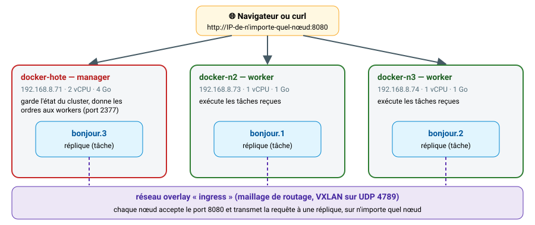

Un cluster Docker Swarm¶
Résumé
Jusqu'ici, tout tournait sur une seule VM : si elle tombe, tous les services tombent avec elle. Docker Swarm, intégré à Docker Engine, regroupe plusieurs machines en un cluster : on ne lance plus des conteneurs sur une machine précise, on demande un service (« trois copies de ce site web ») et Swarm les répartit, les surveille et les remplace quand un nœud disparaît.
On monte un cluster de trois nœuds (docker-hote et deux petites VM), on y déploie un service à trois répliques, dont on construit l'image (partie 14) et qu'on range dans le registre (partie 15), puis on vérifie le maillage de routage, on coupe un nœud en mesurant l'effet, on crée un réseau overlay entre machines, on fait une mise à jour progressive et on déploie une pile Compose sur le cluster.
| Propriété | Valeur |
|---|---|
| Difficulté | Intermédiaire |
| Durée estimée | 2 h 30 |
| Version décrite | Docker Engine 29.10 en mode Swarm, Debian 13.7 |
| Place dans le parcours | Partie 16 sur 17 du parcours Docker — jour 5 |
| Dernière mise à jour | 2026-11-24 |
Convention de lecture
🖥️ PC hôte · 🐧 dans une VM : 1️⃣ docker-hote (le manager), 2️⃣ docker-n2, 3️⃣ docker-n3 · 🌐 navigateur · ✍️ exercice · 🛟 instantané. Toutes les commandes Docker se tapent en adminlab, sauf mention de sudo. Point de départ : l'instantané 06-registre (fin de la partie 15).
Adapter les adresses à son lab
Les commandes et les sorties de cette partie montrent les adresses du lab de référence (réseau 192.168.8.0/24). Avant de copier une commande, remplacer chaque adresse par celle de sa propre VM (relevée avec ip -br a) :
| Machine | Lab de référence | Chez soi (à noter) |
|---|---|---|
1️⃣ docker-hote (manager et registre privé) |
192.168.8.71 |
IP-de-la-VM |
2️⃣ docker-n2 |
192.168.8.73 |
IP-de-n2 |
3️⃣ docker-n3 |
192.168.8.74 |
IP-de-n3 |
Sous VirtualBox, ce sont les adresses de la carte 2 (192.168.56.x). Une adresse oubliée donne des erreurs peu parlantes (connection refused, tâches « Rejected ») : en cas de doute, relire la commande.
1. Pourquoi un cluster ?¶
1.1 Le problème d'un seul serveur¶
Avec Docker seul, un conteneur tourne sur une machine. Si elle tombe en panne, ou s'il faut la redémarrer pour une mise à jour du système, le service est coupé jusqu'à son retour. Et si le service doit absorber plus de visiteurs, on ne peut pas facilement en lancer plusieurs copies sur plusieurs machines.
Un orchestrateur résout ces problèmes. On lui décrit l'état voulu (« trois copies de cette image, port 8080 ») et il s'occupe du reste : il choisit sur quelles machines lancer les conteneurs, vérifie en permanence que l'état réel correspond à l'état voulu, et corrige tout écart. Analogie : un chef d'équipe à qui l'on dit « il faut toujours trois personnes à l'accueil » ; si l'une part, il en envoie une autre, sans qu'on ait à le lui redemander.
Docker Swarm (le « mode Swarm » de Docker Engine) est l'orchestrateur intégré à Docker : rien à installer de plus. Kubernetes est l'orchestrateur le plus répandu dans les grandes infrastructures, beaucoup plus riche, mais aussi beaucoup plus complexe ; Swarm est un excellent moyen d'en comprendre les notions de base.
1.2 Le vocabulaire¶
| Terme | Définition |
|---|---|
| Nœud (node) | Une machine (ici une VM) avec Docker, membre du cluster |
| Manager | Nœud qui garde l'état du cluster et décide : où lancer quoi, quoi remplacer. On administre le cluster depuis un manager |
| Worker | Nœud qui exécute les conteneurs que le manager lui confie. Un manager est aussi worker par défaut |
| Service | La description de ce qu'on veut : une image, un nombre de répliques, des ports, des réseaux… |
| Tâche (task) ou réplique | Un conteneur lancé pour un service, sur un nœud. Un service à 3 répliques = 3 tâches |
| Maillage de routage (routing mesh) | Le port publié d'un service est ouvert sur tous les nœuds, et chacun transmet la requête à une réplique, où qu'elle soit |
| Réseau overlay | Réseau virtuel qui s'étend sur plusieurs machines : des conteneurs de nœuds différents s'y parlent comme s'ils étaient sur le même réseau |
1.3 Combien de managers ?¶
Les managers se mettent d'accord sur l'état du cluster avec l'algorithme Raft : une décision n'est valable que si la majorité des managers l'accepte (le quorum). Sans majorité, le cluster continue de faire tourner les conteneurs existants, mais ne peut plus rien changer ni rien réparer.
| Managers | Majorité nécessaire | Managers qui peuvent tomber |
|---|---|---|
| 1 | 1 | 0 |
| 3 | 2 | 1 |
| 5 | 3 | 2 |
| 7 | 4 | 3 |
La règle : avec N managers, le cluster supporte la perte de (N-1)/2 d'entre eux. On choisit donc un nombre impair (avec 4 managers, on ne supporte toujours qu'une panne, comme avec 3). Le lab utilise un seul manager, docker-hote, pour rester léger : si docker-hote tombe, les conteneurs des workers continuent de tourner, mais plus rien ne les répare. En production, on prévoit trois managers.

Le cluster du lab : un manager, deux workers, et le maillage de routage qui rend le service joignable par chaque nœud
2. Préparer les trois nœuds¶
2.1 Créer docker-n2 et docker-n3¶
Les deux nouvelles VM sont petites : Docker et quelques conteneurs légers tiennent largement dans 1 Go (environ 350 Mo utilisés sur un worker qui exécute une réplique).
| VM | vCPU | Mémoire | Disque | Rôle |
|---|---|---|---|---|
docker-hote |
2 | 4 Go | 40 Go | Manager (et worker), registre privé |
docker-n2 |
1 | 1 Go | 20 Go | Worker |
docker-n3 |
1 | 1 Go | 20 Go | Worker |
-
🖥️ Créer les deux VM en refaisant, pour chacune, les sections 2.1 à 2.4 de la partie 1 : réglages de la VM, installation de Debian 13 sans bureau (comptes
rootetadminlab, mot de passe du lab), adresse de la VM (sous VirtualBox, configuration de la carteenp0s8), connexion SSH. Changer seulement le nom d'hôte (docker-n2,docker-n3) et les ressources du tableau. Ne pas refaire la section 3 de la partie 1 : Docker s'installe plus bas, par le script. Éteindredocker-plateformesi elle tourne : les trois VM du cluster demandent 6 Go.Les trois VM sont sur VMnet8 (NAT). Elles se joignent entre elles par leurs adresses
192.168.x.y. Noter l'adresse de chaque VM (ip -br a).Chaque VM doit avoir, comme
docker-hote, deux cartes : NAT (carte 1) et Réseau privé hôte (carte 2). C'est par la carte 2 (192.168.56.x) que les nœuds se parlent.Ne jamais utiliser l'adresse 10.0.2.15
En mode NAT, toutes les VM VirtualBox reçoivent la même adresse
10.0.2.15, sur des réseaux isolés les uns des autres. Le cluster doit être créé avec les adresses192.168.56.xde la carte 2.Swarm choisit les sous-réseaux de ses réseaux overlay dans
10.0.0.0/8, par tranches de 256 adresses :10.0.0.0/24,10.0.1.0/24, puis10.0.2.0/24, qui est aussi le réseau NAT de VirtualBox. Pour éviter tout chevauchement, la commandedocker swarm initde la section 3.1 (onglet VirtualBox) ajoute l'option--default-addr-pool 10.20.0.0/16: les réseaux overlay sont alors pris dans10.20.0.0/16, et leurs adresses diffèrent de celles affichées dans cette page (10.0.1.0/24…).
Prendre l'instantané 00-debian-installee
🛟 Sur docker-n2 et docker-n3, VM éteinte (poweroff en root), prendre l'instantané 00-debian-installee.
Des adresses IP qui ne changent pas
Les nœuds d'un cluster se retrouvent par leur adresse IP : si le DHCP change l'adresse du manager après un redémarrage, les workers ne le retrouvent plus. Pour la durée du TP, l'adresse distribuée par l'hyperviseur reste en général la même ; en production, chaque nœud a une adresse fixe (ou une réservation DHCP).
Dans la suite, les adresses sont celles du lab : 192.168.8.71 pour docker-hote, .73 pour docker-n2, .74 pour docker-n3. Les remplacer par les siennes.
2.2 Installer Docker sur les deux workers¶
2️⃣ 3️⃣ Sur chacune des deux nouvelles VM, connecté en SSH en adminlab, devenir root avec su -, puis :
-
Installer
sudo(que Debian n'installe pas quandroota un mot de passe, voir la section 3.2 de la partie 1) etcurl, et autoriseradminlabà utilisersudo: -
Installer Docker avec le script de la partie 1, en répondant
oui,oui,oui, puisadminlab:curl -fsSLO https://wiki.bodaine.fr/cours-tp/docker/fichiers/installer-docker.sh chmod +x installer-docker.sh ./installer-docker.shL'installation prend moins d'une minute.
-
Fermer toutes les sessions (
exitdeux fois) et se reconnecter enadminlab: les groupessudoetdockerne sont pris en compte qu'à la connexion. Vérifier :id -nGcontientsudoetdocker, etdocker version --format '{{.Server.Version}}'affiche29.10.0(ou plus récent).
Juste après le démarrage d'une VM neuve
Si le script s'arrête sur Could not get lock /var/lib/apt/lists/lock, une mise à jour automatique tourne encore : attendre une minute et relancer.
2.3 Autoriser le registre privé sur les workers¶
Les workers vont télécharger l'image du service depuis le registre de docker-hote (partie 15), en HTTP. Ils ont besoin du même réglage que docker-hote.
-
2️⃣ 3️⃣ Sur chaque worker, créer le fichier (il n'existe pas encore), en remplaçant l'adresse par celle de
docker-hote:Les plages
127.0.0.0/8et::1/128ne sont pas utiles ici : aucun registre ne tourne sur les workers. -
2️⃣ 3️⃣ Redémarrer Docker et tester :
Le téléchargement doit aboutir (
Status: Downloaded newer image…).
2.4 Les ports du cluster¶
Les nœuds d'un cluster Swarm communiquent sur trois ports. Debian n'active pas de pare-feu par défaut : rien à ouvrir dans le lab. Sur des serveurs protégés par un pare-feu (nftables, UFW, pare-feu du réseau), ces ports doivent être ouverts entre les nœuds, et seulement entre eux.
| Port | Protocole | Où | Rôle |
|---|---|---|---|
| 2377 | TCP | Vers les managers | Gestion du cluster : les nœuds rejoignent le cluster et reçoivent leurs ordres par ce port ; les managers s'y synchronisent (Raft) |
| 7946 | TCP et UDP | Entre tous les nœuds | Découverte des nœuds et échange d'informations sur les réseaux overlay (qui est où, qui est vivant) |
| 4789 | UDP | Entre tous les nœuds | Le trafic des conteneurs sur les réseaux overlay, encapsulé en VXLAN (des trames réseau transportées dans des paquets UDP) |
Ne jamais exposer 2377 ni 4789 sur Internet
Le trafic VXLAN (4789) n'est pas chiffré par défaut, et n'est pas authentifié : quelqu'un qui peut envoyer des paquets sur ce port peut injecter du trafic dans les réseaux des conteneurs. Ces ports restent dans un réseau de confiance. Un réseau overlay peut être chiffré (docker network create --opt encrypted …), au prix d'un peu de performance ; il faut alors aussi autoriser le protocole IP 50 (ESP) entre les nœuds.
3. Créer le cluster¶
3.1 Initialiser le manager¶
1️⃣ Sur docker-hote, créer le cluster en précisant l'adresse que les autres nœuds utiliseront pour le joindre :
L'adresse est celle de docker-hote (192.168.8.71 dans le lab de référence) :
Swarm initialized: current node (62jg8791fu1r9lbaqajvs3oty) is now a manager.
To add a worker to this swarm, run the following command:
docker swarm join --token SWMTKN-1-64bci2lpkbmt5fijn30llrpb146glc1fauwv5x7n2gw275e206-a9oriaq… 192.168.8.71:2377
To add a manager to this swarm, run 'docker swarm join-token manager' and follow the instructions.
--advertise-addr: l'adresse annoncée aux autres nœuds. Sans elle, Docker choisit tout seul, et refuse de choisir quand la machine a plusieurs adresses (cas des deux cartes de VirtualBox) : la donner toujours.- Le jeton (token)
SWMTKN-1-…est le mot de passe d'entrée dans le cluster en tant que worker. Le garder pour soi : avec lui, n'importe quelle machine peut rejoindre le cluster et recevoir des conteneurs. Il se réaffiche avecdocker swarm join-token worker.
3.2 Ajouter les workers¶
2️⃣ 3️⃣ Sur docker-n2, puis sur docker-n3, copier-coller la commande docker swarm join … affichée par le manager (avec son jeton complet) :
3.3 Vérifier le cluster¶
1️⃣ Sur le manager :
ID HOSTNAME STATUS AVAILABILITY MANAGER STATUS ENGINE VERSION
62jg8791fu1r9lbaqajvs3oty * docker-hote Ready Active Leader 29.10.0
z7dtkky7cgmlloflc1c058bn7 docker-n2 Ready Active 29.10.0
n6wxt7pq24hahxra0mfv99h2r docker-n3 Ready Active 29.10.0
| Colonne | Signification |
|---|---|
* |
Le nœud sur lequel on tape la commande |
STATUS |
Ready : le nœud répond ; Down : le manager ne l'entend plus |
AVAILABILITY |
Active : peut recevoir des tâches ; Drain : vidé pour maintenance (section 7) |
MANAGER STATUS |
Leader : le manager qui décide ; vide pour un worker |
docker node ls ne fonctionne que sur un manager. Sur un worker, Docker répond : This node is not a swarm manager. Worker nodes can't be used to view or modify cluster state.
1️⃣ puis 2️⃣ Comparer les ports ouverts sur un manager et sur un worker (sudo ss -tulnp | grep -E ':(2377|7946|4789)\b') :
== docker-hote (manager)
udp 0.0.0.0:4789
udp *:7946 users:(("dockerd",…))
tcp *:2377 users:(("dockerd",…))
tcp *:7946 users:(("dockerd",…))
== docker-n2 (worker)
udp 0.0.0.0:4789
udp *:7946 users:(("dockerd",…))
tcp *:7946 users:(("dockerd",…))
Seul le manager écoute sur 2377. Le port 4789 n'affiche pas de processus : il est géré directement par le noyau Linux (VXLAN).
1️⃣ 2️⃣ 3️⃣ docker network ls montre aussi deux nouveaux réseaux sur chaque nœud : ingress (driver overlay, portée swarm), qui porte le maillage de routage, et docker_gwbridge, un pont local qui relie les réseaux overlay à la machine.
4. Un premier service à trois répliques¶
4.1 Une image qui dit qui elle est¶
Pour voir quelle réplique répond, on construit une petite image qui affiche le nom de son conteneur. On réutilise la partie 14 (Dockerfile) et la partie 15 (registre).
-
1️⃣ Créer le dossier du projet et un script de démarrage :
-
1️⃣ Le Dockerfile :
FROM nginx:1.31-alpine # Les scripts de /docker-entrypoint.d/ sont lancés par l'image nginx avant le serveur COPY 50-bonjour.sh /docker-entrypoint.d/50-bonjour.sh RUN chmod +x /docker-entrypoint.d/50-bonjour.shL'image officielle
nginxexécute au démarrage tous les scripts du dossier/docker-entrypoint.d/avant de lancer le serveur : chaque conteneur écrit ainsi sa propre page, avec son nom. -
1️⃣ Construire directement avec le nom du registre, et pousser :
Pourquoi passer par le registre ?
Une image construite sur docker-hote n'existe que sur docker-hote. Quand le manager confie une réplique à docker-n2, c'est docker-n2 qui doit télécharger l'image : il lui faut une adresse qu'il peut joindre. D'où l'adresse IP du registre dans le nom de l'image, et jamais localhost : sur docker-n2, localhost désigne docker-n2 lui-même. Le défi final revient sur ce piège.
4.2 Créer le service¶
1️⃣ Demander trois répliques, avec le port 8080 publié :
La commande affiche la progression (overall progress: 3 out of 3 tasks) puis attend quelques secondes que les tâches soient stables (verify: Service … converged).
| Option | Rôle |
|---|---|
--name bonjour |
Nom du service |
--replicas 3 |
Nombre de copies voulues : Swarm les maintiendra |
-p 8080:80 |
Publie le port 8080 sur tous les nœuds (maillage de routage) vers le port 80 des répliques |
1️⃣ Observer le service et ses tâches :
ID NAME MODE REPLICAS IMAGE PORTS
bfy6rguo107w bonjour replicated 3/3 192.168.8.71:5000/bonjour:1.0 *:8080->80/tcp
ID NAME IMAGE NODE DESIRED STATE CURRENT STATE ERROR PORTS
szqbhv5l4x2c bonjour.1 192.168.8.71:5000/bonjour:1.0 docker-n2 Running Running 5 seconds ago
i4d622nkb4vs bonjour.2 192.168.8.71:5000/bonjour:1.0 docker-n3 Running Running 5 seconds ago
job1e9t29ig1 bonjour.3 192.168.8.71:5000/bonjour:1.0 docker-hote Running Running 8 seconds ago
Swarm a réparti les trois répliques, une par nœud. REPLICAS 3/3 : trois voulues, trois en marche.
1️⃣ 2️⃣ 3️⃣ Sur chaque nœud, docker ps --filter name=bonjour montre le conteneur local, au nom composé : bonjour.1.szqbhv5l…. Ce sont des conteneurs ordinaires, lancés par Swarm. Ne pas les supprimer à la main : Swarm les recréerait aussitôt.
5. Le maillage de routage¶
🖥️ Depuis PowerShell sur le PC, interroger chaque nœud trois fois (curl.exe, livré avec Windows 10 et 11, et non l'alias curl de PowerShell) :
foreach ($ip in "192.168.8.71","192.168.8.73","192.168.8.74") { 1..3 | ForEach-Object { curl.exe -s "http://$($ip):8080/" } }
Bonjour depuis le conteneur a29d84ca759f
Bonjour depuis le conteneur fb211602f3fb
Bonjour depuis le conteneur 347c52d87d07
Bonjour depuis le conteneur a29d84ca759f
Bonjour depuis le conteneur fb211602f3fb
Bonjour depuis le conteneur 347c52d87d07
Bonjour depuis le conteneur fb211602f3fb
Bonjour depuis le conteneur a29d84ca759f
Bonjour depuis le conteneur 347c52d87d07
Quel que soit le nœud interrogé, les trois répliques répondent à tour de rôle : chaque nœud répartit les requêtes entre toutes les répliques du cluster (en tourniquet, round robin).
1️⃣ Plus parlant : ne garder qu'une réplique, puis interroger les trois nœuds :
ID NAME IMAGE NODE DESIRED STATE CURRENT STATE ERROR PORTS
szqbhv5l4x2c bonjour.1 192.168.8.71:5000/bonjour:1.0 docker-n2 Running Running 21 seconds ago
1️⃣ Interroger les trois nœuds :
for ip in 192.168.8.71 192.168.8.73 192.168.8.74; do echo "$ip -> $(curl -s http://$ip:8080/)"; done
192.168.8.71 -> Bonjour depuis le conteneur fb211602f3fb
192.168.8.73 -> Bonjour depuis le conteneur fb211602f3fb
192.168.8.74 -> Bonjour depuis le conteneur fb211602f3fb
La seule réplique tourne sur docker-n2, et pourtant docker-hote et docker-n3 répondent aussi sur le port 8080 : ils transmettent la requête à docker-n2 par le réseau ingress. On peut donc placer un répartiteur de charge (ou un reverse proxy comme NPM) devant n'importe quel nœud, ou devant tous.
1️⃣ Revenir à trois répliques : docker service scale bonjour=3.
6. La panne d'un nœud¶
On simule une vraie panne : docker-n3 s'éteint brutalement, comme une coupure de courant.
-
1️⃣ Dans une deuxième session SSH sur
docker-hote, lancer une requête par seconde, qui affiche l'heure et la réponse (ouECHEC) : -
1️⃣ Dans la première session, suivre l'état du cluster toutes les 2 secondes :
-
🖥️ Couper
docker-n3sans arrêt propre :Sélectionner
docker-n3, menu VM > Power > Power Off (couper l'alimentation), et non Shut Down Guest.Fermer la fenêtre de
docker-n3(croix en haut à droite), puis choisir Éteindre la machine (Power off the machine), et non l'extinction par ACPI, qui arrêterait Debian proprement.Déroulé type,
docker-n3étant coupé à 13:00:36 :Moment Ce qui se passe ~14 s après la coupure docker node lspassedocker-n3enDown: le manager ne reçoit plus ses signes de vie~19 s Une nouvelle réplique bonjour.3est créée sur un nœud vivant (icidocker-hote) :Starting~21 s Elle est Running: le service est revenu à 3/3Pendant toute la panne Sur 70 requêtes (une par seconde), une seule a échoué ( ECHEC), deux secondes après la coupureRésumé, ligne par ligne, de ce qu'affiche
watchau fil de la panne :13:00:50 docker-hote=Ready docker-n2=Ready docker-n3=Down bonjour.1@docker-n2:Running … bonjour.2@docker-hote:Running … 13:00:55 … bonjour.3@docker-hote:Starting less than a second ago 13:00:57 … bonjour.3@docker-hote:Running 2 seconds agoSwarm a constaté l'écart entre l'état voulu (3 répliques) et l'état réel (2) et l'a corrigé seul. Arrêter les deux boucles avec Ctrl+C.
-
🖥️ Redémarrer
docker-n3, puis 1️⃣ attendre qu'il redevienneReady(docker node ls) et regarder où sont les répliques :ID NAME IMAGE NODE DESIRED STATE CURRENT STATE ERROR PORTS szqbhv5l4x2c bonjour.1 192.168.8.71:5000/bonjour:1.0 docker-n2 Running Running 2 minutes ago robvsm0r7pli bonjour.2 192.168.8.71:5000/bonjour:1.0 docker-hote Running Running about a minute ago o3ndj05n2xyc bonjour.3 192.168.8.71:5000/bonjour:1.0 docker-hote Running Running about a minute agoDeux répliques restent sur
docker-hoteet aucune ne revient surdocker-n3: Swarm ne déplace jamais des conteneurs qui fonctionnent, pour ne pas couper le service sans raison. Pour rééquilibrer, on force le remplacement des tâches, une par une :ID NAME IMAGE NODE DESIRED STATE CURRENT STATE ERROR PORTS 0fxpddh99ep3 bonjour.1 192.168.8.71:5000/bonjour:1.0 docker-n2 Running Running 2 seconds ago 2o3m817wtmlh bonjour.2 192.168.8.71:5000/bonjour:1.0 docker-hote Running Running 6 seconds ago 9u8op0v647ef bonjour.3 192.168.8.71:5000/bonjour:1.0 docker-n3 Running Running 11 seconds ago
Et si c'est le manager qui tombe ?
Avec un seul manager, les conteneurs des workers continuent de tourner et de répondre, mais plus personne ne surveille ni ne répare : une nouvelle panne ne serait pas corrigée, et aucune commande docker service … ne fonctionne. Avec trois managers, la perte de l'un d'eux ne change rien : les deux autres gardent la majorité (section 1.3). Pour passer à trois managers, on promeut les deux workers d'un coup : docker node promote docker-n2 docker-n3 (un nombre impair, toujours : avec deux managers, la perte d'un seul bloquerait tout).
7. Maintenance d'un nœud : le mode Drain¶
Avant de redémarrer un nœud pour une mise à jour du système, on le vide proprement : ses tâches sont déplacées avant l'arrêt, sans attendre la détection de panne.
1️⃣ Vider docker-hote (le manager garde son rôle de manager, il ne reçoit simplement plus de tâches) :
docker node update --availability drain docker-hote
docker node ls
docker service ps bonjour --filter desired-state=running
ID HOSTNAME STATUS AVAILABILITY MANAGER STATUS ENGINE VERSION
62jg8791fu1r9lbaqajvs3oty * docker-hote Ready Drain Leader 29.10.0
z7dtkky7cgmlloflc1c058bn7 docker-n2 Ready Active 29.10.0
n6wxt7pq24hahxra0mfv99h2r docker-n3 Ready Active 29.10.0
ID NAME IMAGE NODE DESIRED STATE CURRENT STATE ERROR PORTS
0fxpddh99ep3 bonjour.1 192.168.8.71:5000/bonjour:1.0 docker-n2 Running Running 12 seconds ago
a9j4hxgru6qq bonjour.2 192.168.8.71:5000/bonjour:1.0 docker-n2 Running Running 5 seconds ago
9u8op0v647ef bonjour.3 192.168.8.71:5000/bonjour:1.0 docker-n3 Running Running 21 seconds ago
À retenir :
- Le mode
Drainne concerne que les tâches Swarm. Les conteneurs lancés avecdocker runoudocker composesurdocker-hote(NPM, Nextcloud, le registre…) continuent de tourner. - Le service reste joignable sur
http://192.168.8.71:8080: le nœud vidé participe toujours au maillage de routage. - En production, on garde souvent les managers en
Drain: ils se consacrent à la gestion du cluster.
1️⃣ Remettre docker-hote en service : docker node update --availability active docker-hote.
8. Un réseau overlay entre les nœuds¶
Le service bonjour est joignable de l'extérieur par son port publié. Mais une base de données, par exemple, ne doit être joignable que par l'application, quel que soit le nœud où elle tourne. C'est le rôle d'un réseau overlay personnalisé, l'équivalent multi-machines du réseau bridge personnalisé de la partie 7.
-
1️⃣ Créer le réseau :
NETWORK ID NAME DRIVER SCOPE e75ta7tnrpza ingress overlay swarm 3s22muisqdtd reseau-app overlay swarmPortée
swarm: le réseau existe dans tout le cluster (sous-réseau10.0.1.0/24ici).--attachableautorise aussi de simples conteneurs (lancés pardocker run) à s'y brancher, ce qui sert au test ci-dessous. -
1️⃣ Lancer un service sans port publié, branché sur ce réseau :
-
3️⃣ Depuis
docker-n3, lancer un petit conteneur sur le même réseau et appeler le service par son nom, plusieurs fois :Bonjour depuis le conteneur 6a9214774e9e Bonjour depuis le conteneur f363eee705f3 Bonjour depuis le conteneur 6a9214774e9e Bonjour depuis le conteneur f363eee705f3Les deux répliques répondent, dont celle de
docker-n2: le trafic a traversé le réseau des VM, encapsulé en VXLAN sur le port UDP 4789. -
3️⃣ Comment le nom est-il résolu ?
docker run --rm --network reseau-app alpine nslookup interne docker run --rm --network reseau-app alpine nslookup tasks.interneinternedonne une seule adresse (10.0.1.2) : l'IP virtuelle (VIP) du service, qui répartit les connexions entre les répliques.tasks.internedonne l'adresse de chaque réplique (10.0.1.3,10.0.1.4). Comme en partie 7, c'est le DNS intégré de Docker qui répond.
Depuis le PC, interne est injoignable : aucun port publié. C'est exactement ce qu'on veut pour une base de données.
1️⃣ Supprimer le service de test : docker service rm interne. Le réseau reseau-app peut rester.
9. Mise à jour progressive et retour arrière¶
Swarm met à jour un service réplique par réplique : le service ne s'arrête jamais complètement.
-
1️⃣ Construire une version 2 de l'image (le message change) et la pousser :
-
1️⃣ Lancer la mise à jour, une réplique à la fois, avec 5 secondes entre chaque, et observer pendant ce temps (une requête toutes les 2 secondes) :
docker service update --image 192.168.8.71:5000/bonjour:2.0 --update-parallelism 1 --update-delay 5s --detach bonjour for i in $(seq 1 10); do echo "$(date +%T) $(curl -s http://192.168.8.71:8080/)"; sleep 2; done13:03:25 Bonjour depuis le conteneur f0e5c9890a9f 13:03:27 Bonjour depuis le conteneur 37d67bc212a6 13:03:30 Bonjour depuis le conteneur f0e5c9890a9f 13:03:32 Bonjour (version 2) depuis le conteneur 4a098df68700 13:03:34 Bonjour depuis le conteneur 37d67bc212a6 13:03:36 Bonjour depuis le conteneur f0e5c9890a9f 13:03:38 Bonjour (version 2) depuis le conteneur 4a098df68700 13:03:40 Bonjour depuis le conteneur 37d67bc212a6 13:03:42 Bonjour (version 2) depuis le conteneur 1f14e626a3fc 13:03:44 Bonjour (version 2) depuis le conteneur 4a098df68700Pendant la mise à jour, les deux versions répondent en même temps, puis la version 2 remplace peu à peu la version 1. Aucune requête n'a échoué.
-
1️⃣ Revenir à la version précédente d'une seule commande :
docker service rollback bonjour docker service ps bonjour --filter desired-state=running --format '{{.Name}} {{.Image}} {{.Node}}'Les trois répliques reviennent sur
bonjour:1.0. Swarm garde en mémoire la configuration précédente du service : c'est elle querollbackréapplique.
10. Déployer une pile Compose sur le cluster¶
Un fichier Compose (partie 8) peut être déployé sur tout le cluster : on parle alors de pile (stack). La section deploy: du fichier, dont docker compose n'applique qu'une partie (les limites de ressources, partie 12), prend tout son sens avec Swarm : répartition des répliques sur les nœuds, mise à jour progressive, politique de redémarrage.
-
1️⃣ Créer le fichier :
services: web: image: 192.168.8.71:5000/bonjour:1.0 ports: - "8090:80" networks: - front deploy: replicas: 2 restart_policy: condition: any resources: limits: memory: 64M networks: front: driver: overlaycondition: any(la valeur par défaut, écrite ici pour être visible) recrée une réplique quelle que soit la raison de son arrêt. Avecon-failure, une réplique arrêtée proprement (code de sortie 0), par exemple lors de l'arrêt normal d'un nœud, est considérée comme terminée (Complete) et n'est pas remplacée : après un arrêt propre des trois VM, un service enon-failurepeut rester à1/3.Deux différences avec un fichier pour
docker compose: l'image doit déjà exister dans un registre (pas debuild:: les nœuds ne peuvent pas construire), et les réseaux sont de typeoverlay. -
1️⃣ Déployer la pile sous le nom
demo:docker stack deploy -c compose.yaml demo docker stack services demo docker stack ps demo --format '{{.Name}} {{.Node}} {{.CurrentState}}'Creating network demo_front Creating service demo_web ID NAME MODE REPLICAS IMAGE PORTS wy5dkg1ay06y demo_web replicated 2/2 192.168.8.71:5000/bonjour:1.0 *:8090->80/tcp demo_web.1 docker-hote Running 8 seconds ago demo_web.2 docker-n2 Running 8 seconds agoComme avec Compose, les noms sont préfixés par le nom de la pile (
demo_web,demo_front).http://192.168.8.74:8090répond, bien qu'aucune réplique ne tourne surdocker-n3. -
1️⃣ Pour modifier la pile, on change le fichier et on relance la même commande
docker stack deploy: seuls les services modifiés sont mis à jour. Pour la supprimer :
11. Vérifier son lab¶
Vérifier son lab
1️⃣ Sur docker-hote :
docker node ls --format '{{.Hostname}} {{.Status}} {{.Availability}} {{.ManagerStatus}}'
docker service ls --format '{{.Name}} {{.Replicas}} {{.Ports}}'
docker service ps bonjour --filter desired-state=running --format '{{.Node}}'
Résultat attendu (l'ordre des nœuds de la dernière commande peut varier) :
docker-hote Ready Active Leader
docker-n2 Ready Active
docker-n3 Ready Active
bonjour 3/3 *:8080->80/tcp
docker-hote
docker-n3
docker-n2
Les trois répliques doivent être sur trois nœuds différents ; sinon, docker service update --force bonjour.
🖥️ Puis, depuis le PC, chacune des trois adresses répond sur le port 8080 par une ligne Bonjour depuis le conteneur … :
Prendre l'instantané 07-swarm
🛟 Éteindre d'abord les workers, puis le manager (sudo poweroff sur chacun), et prendre l'instantané 07-swarm des trois VM. Au redémarrage, rallumer d'abord docker-hote : le cluster et le service bonjour se reconstituent seuls.
12. Questions de révision¶
- Quelle différence entre un service et un conteneur ? Qui crée les conteneurs d'un service ?
- Pourquoi un cluster de production a-t-il 3 managers plutôt que 2 ou 4 ?
- À quoi servent les ports 2377, 7946 et 4789 ? Lequel n'est ouvert que sur les managers ?
- Une seule réplique tourne, sur
docker-n2. Pourquoihttp://IP-de-docker-n3:8080répond-il quand même ? - Après le retour d'un nœud tombé en panne, aucune réplique n'y revient. Est-ce un problème ? Comment rééquilibrer ?
- Pourquoi l'image d'un service Swarm ne doit-elle jamais s'appeler
localhost:5000/…?
Corrigé
- Le service est une description de l'état voulu (image, nombre de répliques, ports, réseaux). Les conteneurs (les tâches) sont créés par Swarm, sur les nœuds qu'il choisit, et recréés s'ils disparaissent. On ne gère plus les conteneurs à la main.
- Les managers décident à la majorité (Raft). Avec 3, la majorité est 2 : on supporte la perte d'un manager. Avec 2, la majorité est 2 : la perte d'un seul bloque tout, ce n'est pas mieux qu'un. Avec 4, la majorité est 3 : on ne supporte toujours qu'une panne, pour un manager de plus. D'où un nombre impair.
- 2377/TCP : gestion du cluster (adhésion, ordres, synchronisation des managers), ouvert seulement sur les managers. 7946/TCP et UDP : découverte des nœuds et informations des réseaux overlay, entre tous les nœuds. 4789/UDP : trafic des conteneurs sur les réseaux overlay (VXLAN), entre tous les nœuds.
- Grâce au maillage de routage : un port publié par un service est ouvert sur tous les nœuds, et chacun transmet la requête, par le réseau
ingress, à une réplique en marche, où qu'elle soit. - Ce n'est pas une panne : le service a bien ses répliques. Swarm ne déplace pas des conteneurs qui fonctionnent, pour ne pas couper le service. Pour rééquilibrer :
docker service update --force <service>, qui remplace les tâches une par une. - Chaque nœud télécharge l'image lui-même : sur un worker,
localhostdésigne le worker, où il n'y a pas de registre. Il faut une adresse joignable par tous les nœuds (IP ou nom du registre).
Ressources¶
- Mode Swarm : vue d'ensemble — notions et fonctionnement (en anglais).
- Tutoriel Swarm — créer un cluster, ajouter des nœuds, ports à ouvrir.
- Le maillage de routage — publication des ports dans un cluster.
- Administrer un cluster Swarm — nombre de managers, quorum, sauvegarde, maintenance.
- Le pilote réseau overlay — réseaux entre machines, chiffrement.
- Déployer une pile —
docker stack deployavec un fichier Compose. - Partie précédente : Distribuer ses images : Docker Hub et registre privé · Partie suivante : Défi final.